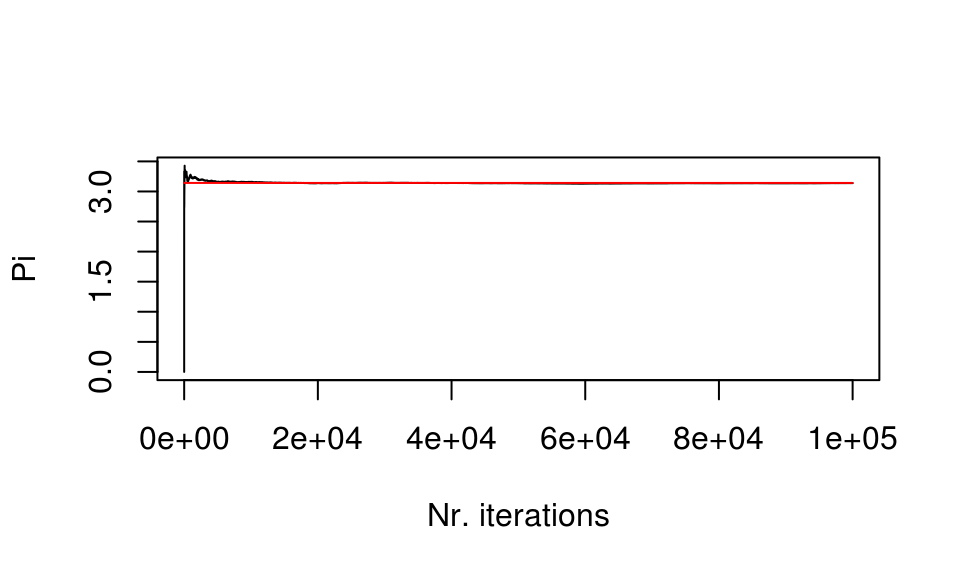
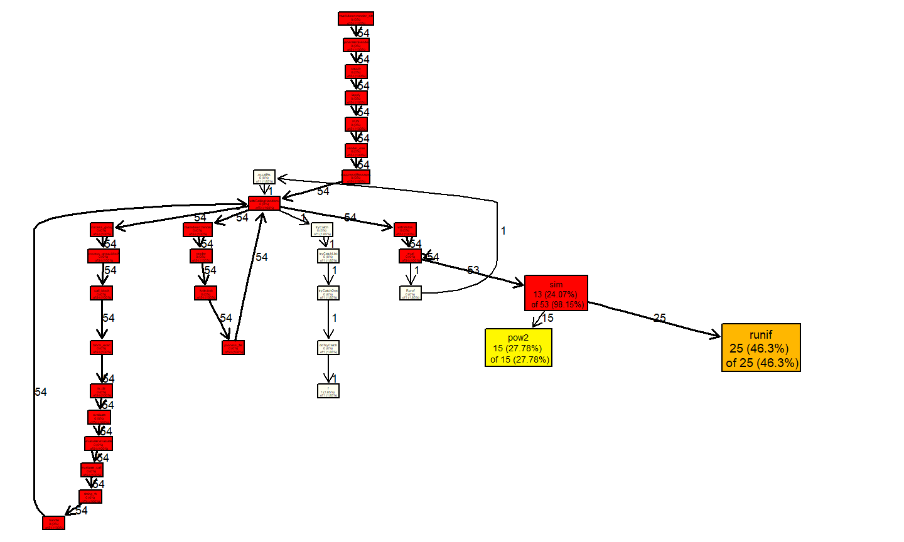

- summary of the times spent in different function calls
- memory usage report
Feb., 2021
Profiling
Pi calculation

\(\textrm{Surface circle} = \left ( \frac{\textrm{Surface circle}}{\textrm{Surface square}} \right ) * (\textrm{Surface square})\)
is always valid. Knowing that \(\textrm{Surface circle} = \pi * r^2\), \(\pi\) can be computed as:
\(\pi = \frac{1}{r^2} \left ( \frac{\textrm{Surface circle}}{\textrm{Surface square}} \right ) * (\textrm{Surface square})\)
the ratio in parentheses is approximated with a Monte Carlo process throwing random points
Pi calculation

Surface ratio
- The R function to compute Pi is:
sim <- function(l) {
c <- rep(0,l)
hits <- 0
pow2 <- function(x) {
x2 <- sqrt( x[1]*x[1]+x[2]*x[2] )
return(x2)
}
for(i in 1:l){
x = runif(2,-1,1)
if( pow2(x) <=1 ){
hits <- hits + 1
}
dens <- hits/i
pi_partial = dens*4
c[i] = pi_partial
}
return(c)
}Pi calculation
The accuracy of the calculation increases with the number of iterations
size <- 100000 res <- sim(size) plot(res[1:size],type='l', xlab="Nr. iterations", ylab="Pi") lines(rep(pi,size)[1:size], col = 'red')

Monitoring the execution time
System.time
This function is included in R by default
size <- 500000 system.time( res <- sim(size) )
## user system elapsed ## 1.56 0.00 1.58
Monitoring the execution time
Tic toc
Another way to obtain execution times is by using the tictoc package:
install.packages("tictoc")
one can nest tic and toc calls and save the outputs to a log file:
Monitoring the execution time
Tic toc
library("tictoc")
size <- 1000000
sim2 <- function(l) {
c <- rep(0,l)
hits <- 0
pow2 <- function(x) { x2 <- sqrt( x[1]*x[1]+x[2]*x[2] ); return(x2) }
tic("only for-loop")
for(i in 1:l){
x = runif(2,-1,1)
if( pow2(x) <=1 ){ hits <- hits + 1 }
dens <- hits/i; pi_partial = dens*4; c[i] = pi_partial
}
toc(log = TRUE)
return(c)
}
Monitoring the execution time
Tic toc
tic("Total execution time")
res <- sim2(size)
## only for-loop: 3.26 sec elapsed
toc(log = TRUE)
## Total execution time: 3.3 sec elapsed
Monitoring the execution time
Tic toc
tic.log()
## [[1]] ## [1] "only for-loop: 3.26 sec elapsed" ## ## [[2]] ## [1] "Total execution time: 3.3 sec elapsed"
tic.clearlog()
Rprof
Rprof should be present in your R installation. For a graphical analysis, we will use proftools package. One needs to install this package in case it is not already installed. For R versions < 3.5 the instructions are:
install.packages("proftools")
source("http://bioconductor.org/biocLite.R")
biocLite(c("graph","Rgraphviz"))
while for R > 3.5 one needs to do
install.packages("proftools")
if (!requireNamespace("BiocManager", quietly = TRUE))
install.packages("BiocManager")
BiocManager::install()
BiocManager::install(c("graph","Rgraphviz"))
Rprof
the profiling is performed with the following lines:
size <- 500000
Rprof("Rprof.out")
res <- sim(size)
Rprof(NULL)
Rprof
the profiling is performed with the following lines:
summaryRprof("Rprof.out")
## $by.self ## self.time self.pct total.time total.pct ## "runif" 0.64 41.03 0.64 41.03 ## "sim" 0.46 29.49 1.56 100.00 ## "pow2" 0.46 29.49 0.46 29.49 ## ## $by.total ## total.time total.pct self.time self.pct ## "sim" 1.56 100.00 0.46 29.49 ## "block_exec" 1.56 100.00 0.00 0.00 ## "call_block" 1.56 100.00 0.00 0.00 ## "eval" 1.56 100.00 0.00 0.00 ## "evaluate" 1.56 100.00 0.00 0.00 ## "evaluate::evaluate" 1.56 100.00 0.00 0.00 ## "evaluate_call" 1.56 100.00 0.00 0.00 ## "FUN" 1.56 100.00 0.00 0.00 ## "generator$render" 1.56 100.00 0.00 0.00 ## "handle" 1.56 100.00 0.00 0.00 ## "in_dir" 1.56 100.00 0.00 0.00 ## "knitr::knit" 1.56 100.00 0.00 0.00 ## "lapply" 1.56 100.00 0.00 0.00 ## "process_file" 1.56 100.00 0.00 0.00 ## "process_group" 1.56 100.00 0.00 0.00 ## "process_group.block" 1.56 100.00 0.00 0.00 ## "render" 1.56 100.00 0.00 0.00 ## "render_one" 1.56 100.00 0.00 0.00 ## "rmarkdown::render" 1.56 100.00 0.00 0.00 ## "rmarkdown::render_site" 1.56 100.00 0.00 0.00 ## "sapply" 1.56 100.00 0.00 0.00 ## "suppressMessages" 1.56 100.00 0.00 0.00 ## "timing_fn" 1.56 100.00 0.00 0.00 ## "withCallingHandlers" 1.56 100.00 0.00 0.00 ## "withVisible" 1.56 100.00 0.00 0.00 ## "runif" 0.64 41.03 0.64 41.03 ## "pow2" 0.46 29.49 0.46 29.49 ## ## $sample.interval ## [1] 0.02 ## ## $sampling.time ## [1] 1.56
Rprof
here you can see that the functions runif and pow2 are the most expensive parts in our code. A graphical output can be obtained through the proftools package:
library(proftools) p <- readProfileData(filename = "Rprof.out")
Rprof
plotProfileCallGraph(p, style=google.style, score="total")

Rbenchmark
One most probably needs to install this package as it is not included by default in R installations:
install.packages("rbenchmark")
then we can benchmark our function sim()
library(rbenchmark) size <- 500000 bench <- benchmark(sim(size), replications=10) bench
## test replications elapsed relative user.self sys.self user.child ## 1 sim(size) 10 15.5 1 15.27 0.03 NA ## sys.child ## 1 NA
Rbenchmark
bench
## test replications elapsed relative user.self sys.self user.child ## 1 sim(size) 10 15.5 1 15.27 0.03 NA ## sys.child ## 1 NA
the elapsed time is an average over the 10 replications we especified in the benchmark function.
Microbenchmark
If this package is not installed, do as usual:
install.packages("microbenchmark")
and do the benchmarking with:
library(microbenchmark) bench2 <- microbenchmark(sim(size), times=10)
Microbenchmark
bench2
## Unit: seconds ## expr min lq mean median uq max neval ## sim(size) 1.529188 1.538677 1.546711 1.546558 1.551489 1.568662 10
in this case we obtain more statistics of the benchmarking process like the mean, min, max, …
References
- https://swcarpentry.github.io/r-novice-inflammation/
- https://www.tutorialspoint.com/r/index.htm
- R High Performance Programming. Aloysius, Lim; William, Tjhi. Packt Publishing, 2015.
- Pi calculation